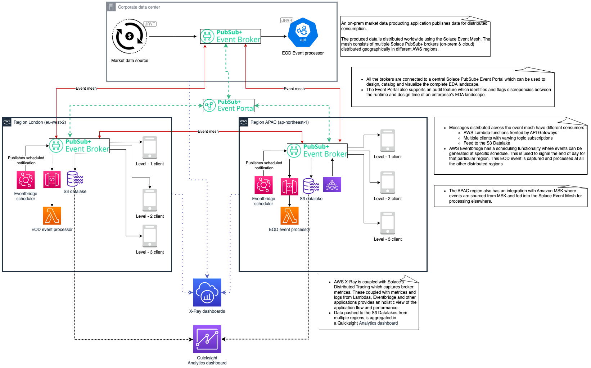

Through this interactive codelab, you'll gain a comprehensive understanding of the unique strengths and advantages that Solace and AWS bring to the table. Get ready to unlock a world of innovation as we walk you through the implementation and utilization of these powerful platforms in a practical, real-world scenario.
Step into the world of trading platforms as we guide you through the creation and exploration of a practical application that leverages the combined power of Solace and AWS. Witness firsthand how these platforms synergistically enhance each other's functionalities, opening doors to limitless possibilities.
The code snippets and samples required for this codelab can be found over the github link : TODO - Link to the github repo.
This codelab will walk you through the steps to :
✅ Setup a Solace Event broker service and link it to an event mesh
✅ Design the EDA Landscape using the Solace Event Portal ✅ Understand different Solace APIs and how to use them
✅ Create a simple Angular base frontend and consume from Solace topics using the Solace Typescript API
✅ Post events to the Solace event mesh using AWS Lambdas and AWS Eventbridge scheduler
✅ Consume events using AWS Lambdas which are exposed by the AWS API Getway and how to use the Solace native API Gateway connector
✅ Export AsyncAPI specficiations and use it to generate Spring Cloud Stream based applications. ✅ Export events to the AWS S3 bucket using the Solace native S3 connector and use it to generate AWS quicksight analytics dashboards
In this codelab, we will be creating a relatively simple but functionally complete trading platform which has is depicted below :

Knowledge level requirement
A detailed list of pre-requisites :
etc
Thanks for participating in this codelab! Let us know what you thought in the Solace Community Forum! If you found any issues along the way we'd appreciate it if you'd raise them by clicking the Report a mistake button at the bottom left of this codelab.